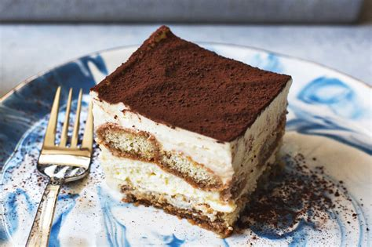

Tiramisu

Description
A delicious coffee-flavored dessert composed with layers of mascarpone mousse and coffee-soaked ladyfingers
Surprisingly easier to make than one would think, it still has quite the effect towards guests
Be mindful to prepare it the eve of your meal!
Ingredients
Steps
Make coffee and let it cool
Separate the egg yolks from the withes
Whip the yolks with the sugar
Add the mascarpone
Whip the egg whites until stiff
Fold with the mascarpone
Now let's assemble!
Quickly dip the ladyfingers and arrange a first layer in the dish of your choosing
Add a layer of mascarpone mousse on top of the ladyfingers
Add another layer of soaked ladyfingers
Add the rest of the mousse
Sprinkle with cocoa powder to decorate
Let your tiramisu rest in the fridge for a minimum of 4 hours, ideally a night
Enjoy!
Be careful not to soak the ladyfingers too much, lest your tiramisu becomes runny and unappetizing